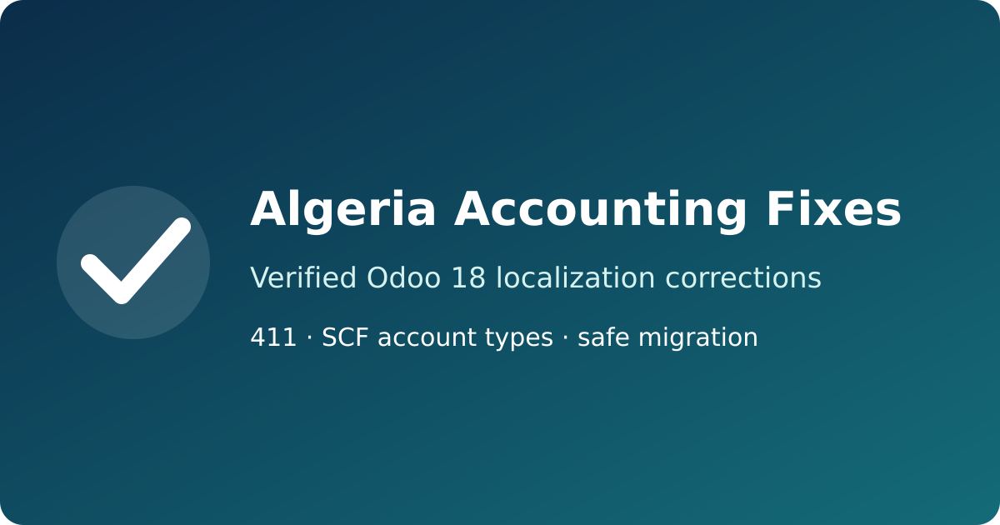

A safer Algerian chart of accounts for Odoo 18
Verified corrections to Odoo's official localization — free and open source


New customers use account 411 Clients, not account 413 reserved for bills of exchange.
Deferred taxes, financing, employee advances, suspense accounts and financial instruments receive verified Odoo account types.
Existing posted entries, balances, archived accounts and deliberate user customizations are preserved.
LGPL-3. Review the source, inspect the accounting evidence matrix, and adapt it to your organisation. Professional Algerian accounting review remains recommended before production adoption.
Requires: Odoo 18.0 and the official l10n_dz module.